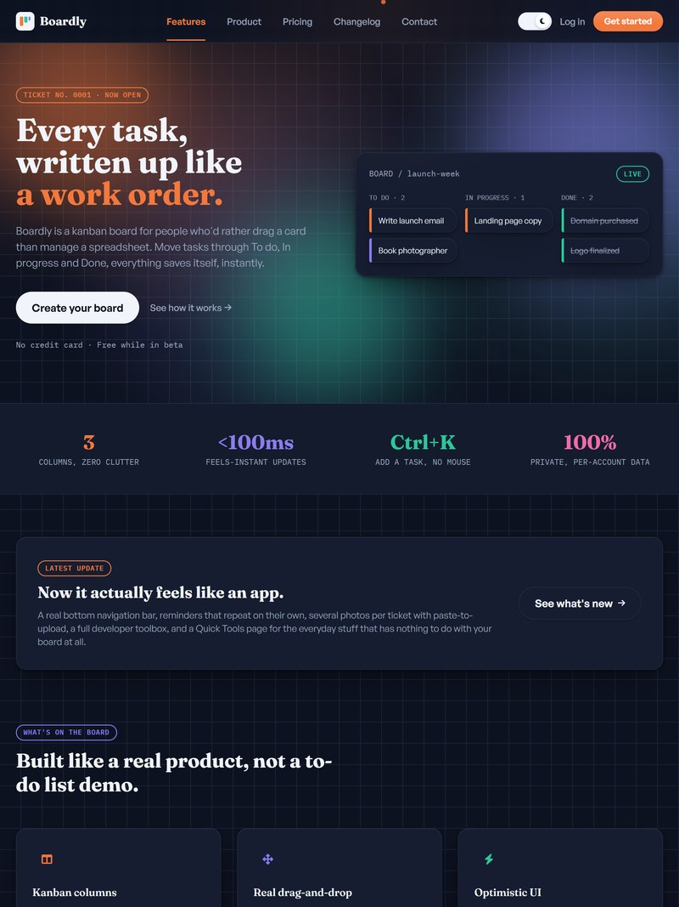
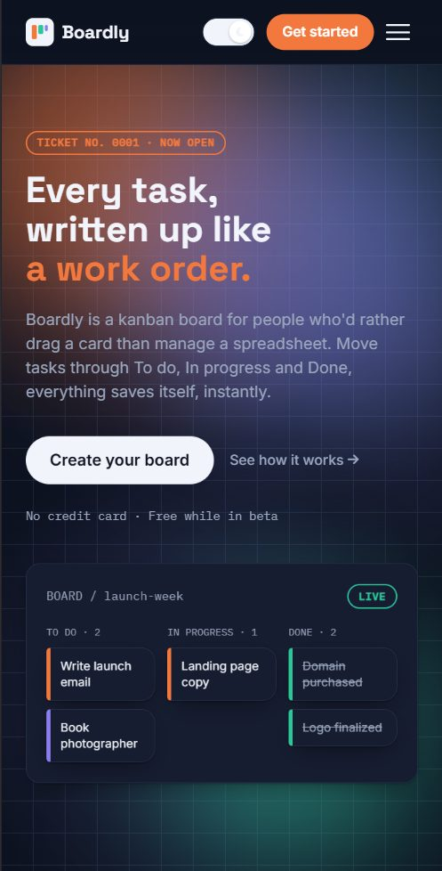

Boardly
A multi tenant task platform with a real Postgres backend behind it, not a static demo dressed up to look like one.

The problem
Most task management tools stop at assigning and tracking work inside one team. Boardly was built to go further: to also let a team run a paid marketplace of services around that work, without bolting on a separate payment system.
The product
Boardly is a multi tenant board based task manager. Boards, tasks, comments, and assignments all live behind Postgres row level security, so one tenant's data is genuinely isolated from another's at the database layer, not just hidden in the interface.
The system
How a request actually moves through the platform, from interface to a confirmed, paid booking.
The complexity
Twenty four Supabase Edge Functions carry the real logic. What they actually add up to:
- Marketplace payments. marketplace-create-booking, marketplace-payment-webhook, marketplace-release-payout, and marketplace-setup-payout together run a genuine two sided marketplace: a client books a service, a payment webhook confirms it, and a payout function releases funds to the provider afterward.
- An AI board assistant. board-assistant is backed by its own generate-embedding function, which means the assistant can search across a board's tasks by meaning, not just by keyword match.
- External integrations. slack-slash-command and zapier-create-task let a task originate outside Boardly entirely. sync-task-to-google-calendar plus google-oauth-callback keep a task's due date in sync with a real calendar in both directions.
- Notifications across three channels. send-push, send-critical-sms, and daily-digest cover push notifications, SMS built for Nigeria optimized delivery that bypasses do not disturb settings for urgent alerts, and an AI written daily summary email sent through Resend.
- A client portal. client-portal-action and get-client-portal let someone outside the core team act on a board, for example approving a task, without a full team member account.
The result
The marketplace payment flow is the single hardest part of this system, because a payout function has to be certain a booking was genuinely paid for before releasing money to the provider. That is what the payment webhook function exists to guarantee, and getting that sequencing right, rather than trusting the client side alone, is what makes this a real payment system rather than a decorative one.
Boardly's own product is separately going through its own redesign, independent of this portfolio, covering a Simple and Smart mode split, vertical specific workflows for logistics, teaching, and freelance work, and further polish on the AI assistant and PWA behavior.
A custom Node backend would have given more control over the marketplace payment logic specifically. It would also have meant building and maintaining auth, real time sync, and row level security from scratch, alone. That tradeoff was not worth it for this project.


Building something with a real backend
If your project needs more than a static page, this is the kind of work I do.